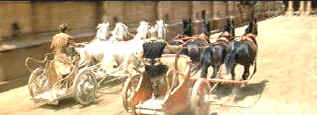

| Ben Hur
(SE)/A-,B+ |
| Warner/1959/212/ANA
2.76 |
The great chariot race, the climax of Ben Hur, is a stirring
achievement. It's filmed with spectacular vitality by the second unit directors Yakima Canutt and
Andrew Marton. The earlier action sequence is less dynamic. The Roman/Macedonian sea battle lacks
the excitement of The Sea Hawk or Captain Blood, but it is serviceable. But Ben
Hur is not primarily a action film. It's a drama of friendship, of family, of spirituality. The
depiction of the Roman world at the time of Christ in Judea and Rome is visually magnificent.
Ben Hur chronicles the journey of Judah Ben Hur, from prince and wealthy
merchant in his native Judea to the bowels of a slave galley war ship to halls of Roman power. With
a running time of almost four hours, it's a tribute to the direction of William Wyler that the film
moves at the pace of a chariot race. MGM pinned their hopes for studio financial survival on Ben
Hur, and Wyler and company delivered the bacon. The film swept the 1959 Academy Awards with
eleven Oscars© including Best Picture, Best Actor, Best Director. The film was an MGM financial
windfall.
 |
| Round and round you go. ©Warner |
Charlton Heston is a convincing presence as Ben Hur. His experience playing
big for DeMille in The Ten
Commandments is
tempered by the tasteful direction of William Wyler. While the figure of Judah Ben Hur reaches
almost mythical proportions, Heston reigns in the character with the same skill exhibited guiding
four pounding steeds in front of a chariot. Heston portrays a combination of tenderness and
determination that effectively defines the character. Stephen Boyd, playing Messala, is not up to
the task of bringing any subtlety to his character. Boyd might have well been twirling a mustache
playing the villain in Ben Hur. It's partly the script and partly his lack of range as an
actor. Messala could have been a great role and maybe another actor could have run a better
race.
Ben Hur is pretty much devoid of humor except for Hugh Griffith's
Academy Award® winning supporting actor performance as Sheik Ilderim. It's a big cast with most of
the Roman roles filled by British actors. Jack Hawkins is a reliable presence as Quintus Arrius.
Hawkins is such a gentleman on screen I was rather shocked by his ability to swing a whip. Haya
Harareet is rather bland and fades into the backgrounds as Hur's love interest Esther. Martha Scott
and Cathy O'Donnell cover up their faces much of the times as mother and daughter of the house of
Hur. Findlay Currie's presence as Balthasar is like the stamp of biblical filmmaking approval.
Currie fits in those spectacle wardrobes perfectly and I will always remember his Cedric in Ivanhoe.
Frank Thring is excellent as Pontius Pilate. The overall quality of acting is very good. Sometimes
actors tend to be dwarfed by the spectacle of a production, but Wyler does not let this
happen.
Director William Wyler's framing of the big shots is beautiful Wyler uses
the ultra widescreen compositions to maximum effect. The vistas of Roman legions marching into
Judea is breathtaking and his Roman camera perspectives are equally fabulous. Commanding the Ben
Hur ship is no small task. The intricacies of production design, costume, the sweeping
photography, call for a director to put together the pieces without being overpowered by the
immensity of the vehicle. Wyler is in control and makes the most of the material.
The Miklos Rozsa Academy Award® winning score is magnificent. Rozsa captures
the grandeur of the Roman Empire with becoming overblown. There are times when it seem like the
music is part of the action. The music consistently enhances Wyler's image. The Oscar© winning
cinematography of Robert Surtees is equally breathtaking.
All I can say is: “Judah…Ben Hur.”
Maybe I can’t deliver the line with the wonder of Sam Jaffe as Simonides, but in this case I can
echo the sentiment at delighted wonder that Jaffe incanted. Much of the new Ben Hur DVD
looks spectacular. The image benefited from moving the sharpness control from its normal off
position, which is somewhat dismaying. With the sharpness amplified sparingly on Ben Hur,
most of the images are crisp without any residual edginess. Without careful monitoring, uses of the
sharpness control often degrades overall picture performance. There are a couple of scenes where
peak transitions ring, but these are very few and would not be eliminated with the sharpness
control off. The color appears to have been restored during the transfer stage. The old laser disc
had some nasty color fading and the left 25% of the screen in some scenes seemed to be mastered
from totally different elements (Not the case of course). Now the color is uniformly vital. The blue skies are lustrous and pure. Which
leads to a question of the apparent absence of film grain. Now, I am not saying the picture was not
pleasing to me sans any hint of film grain, but I wonder if the grain was wiped out in the transfer
in some way. This might be robbing some character from the image. The night scenes do not fare as well as they should have. Blacks don’t even
look like they are being rendered by a CRT projector; more like a middling DLP or LCD. The
resultant image lacks depth, seems flattened out. My first notice of this problem occurred early on
in the scene in which Messala with Sextus on his arrival in Judea. It’s worse later in some
scenes with Heston and Harareet to some degree in their first love scene and later in some outdoor
courtyard sequences. The worst example is the revelation scene when Hur’s family is blessed by
Christ’s miracle. There is some slight horizontal jitter in the opening credits, but I did not
notice it in the picture after that., happily. This is by far the best I have seen Ben Hur
look since I sat cramped in the balcony of the Loews State Theater in 1959, my knees propping up my
chin. Maybe it even looks better. It’s certainly the best video incarnation of the great
widescreen spectacular.
The newly mixed Dolby Digital 5:1 surround sounds great to my ears. The roar
of the crowd filled my home theater with a cacophonous din during the chariot scenes. Miklos Rozsa’s
magnificent score is simply wonderful, with an open, orchestral front sound field. I don’t want
to get into the issue that this is not the original mix for the film, the stereo dialogue having
been remixed to a mono center channel. I have always found the old stereo dialogue mixes mostly
disconcerting. I feel somewhat blasphemous since I am a stickler for delivering the proper aspect
ratios of films. However, the dialogue is very clear and sense of who is speaking is never in
question.
It's incredible to have Charlton
Heston sharing his experiences on Ben Hur. Heston’s
audio commentary is, not surprisingly, well delivered. There are many gaps in the continuity of
commentary; however, Warner has encoded a chapter forward symbol on the image to move to the next
Heston observation. It works like a charm. There are repetitions in Heston’s comments; he notes
his admiration for the “Brit” actors a number of times and he enjoys talking about his chariot
training more than once. That’s okay. I think Heston is generous in his commentary. His respect
for director Wyler is obvious and his memory is sharp, very sharp. You can tell that watching the
film spurs his memory. Heston remembers that the Italian extras were useful but difficult; do you
think he’ll ever get back into Italy.
The three myths of the chariot race are debunked by Heston: One that there is a red Ferrari
parked in the side of the arena; two, that someone was killed in the race, not true; three that
Heston is visibly wearing a wrist watch in one or two shots. When watching the film I remember
wondering about the setting for the valley of the lepers: Heston answers my question noting that it
was a marble quarry. Great look I might add. Heston also confirms his excellent marksmanship with a
lance, though he notes it took five takes to hit the cross-arch target right.
The documentary made by Turner in 1993 is quite informative as it traces the
history of General Lew Wallace’s novel. It features observations from Gore Vidal, some older
glimpses of stunt legend Yakima Canutt and some memories from stunt Joe Canutt, who stood in for
Heston is some of the nastier chariot, a few moments with William Wyler and comments from his
daughter Catherine. It runs about an hour.
Warner has also included a couple of screen tests for Ben Hur. The
extensive presentation of a scene between Judah Ben Hur and Messala features Leslie Neilson (Naked
Gun) trying on Messala's dialogue and Cesar Denova often grinning through Judah. It's a
terrific little presentation and is a reminder of what can happen to a film owing to the wrong
casting. There's also a silent test of Haya Harareet in heavy makeup.
|
|
|
|

The Feature Archive
has articles ranging from Akira
Kurosawa to Blonde Bimbos.

Click on the image above for a "dream interview" with director John Ford.

 Have you visited Home Theater
Talk lately? One of the friendliest places on the Net for Home Theater and DVD discussion, you
can get help for installation problems or simply share your opinions with other Vidiots. Have you visited Home Theater
Talk lately? One of the friendliest places on the Net for Home Theater and DVD discussion, you
can get help for installation problems or simply share your opinions with other Vidiots.

The American Widescreen Museum, is the ultimate resource for widescreen movie information, Martin
Hart's reliable site is a great tool for movie buffs.

Cyber Theater is an outstanding source for accurate video information. Check out their 16 x 9
format guide for a thorough understanding of DVD encoded that way.

DVD
Demystified makes it all clear.The official Internet DVD FAQ for the rec.video.dvd
Usenet newsgroups.

Looking for information about widescreen movies and hardware. The Widescreen Movie Center
is the place to go.

The National Film Preservation Foundation (NFPF) is the nonprofit organization created by the U.S. Congress to save
America's film heritage.

The home of John Tisch's invaluable Poster Price Almanac. Every serious poster collector
uses the Almanac as a reference.
 A huge selection of French movie
posters with images galore. Don't miss this site if you ate interested in lovely French posters. A huge selection of French movie
posters with images galore. Don't miss this site if you ate interested in lovely French posters.
Umberto Passini Online

Vintage & Contemporary Film Poster Art. Umberto has developed a fine Internet
reputation as reliable and honest. Nice posters too!

Films of the Golden Age is
a showcase for special feature articles on film
people and Hollywood history, all illustrated with beautiful photographs and classic movie art.

The DVD Forum is an international association of hardware
manufacturers, software firms and other users of Digital Versatile Discs (the "DVD
Format"), created for the purpose of exchanging and disseminating ideas and information about
the DVD Format and its technical capabilities, improvements and innovations.

The
Movie Poster Archive includes extensive poster images from the films of stars like Susan Hayward,
Kirk Douglas, Katharine Hepburn and many more. Our featured star is Tyrone Power.

Starship Troopers/A-,A

A great, modern, war movie that skewers genre conventions. Director Paul Verhoeven controls
the Scifi flick with a perfect flight plan.
Jou Du/A,B-

A sexy Chinese noir. Bold colors paint stirring emotions in a small
provincial town.
|